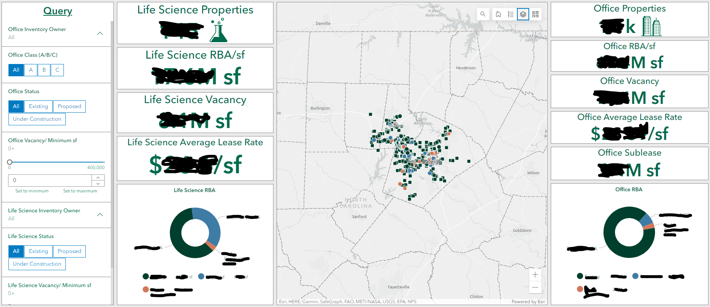
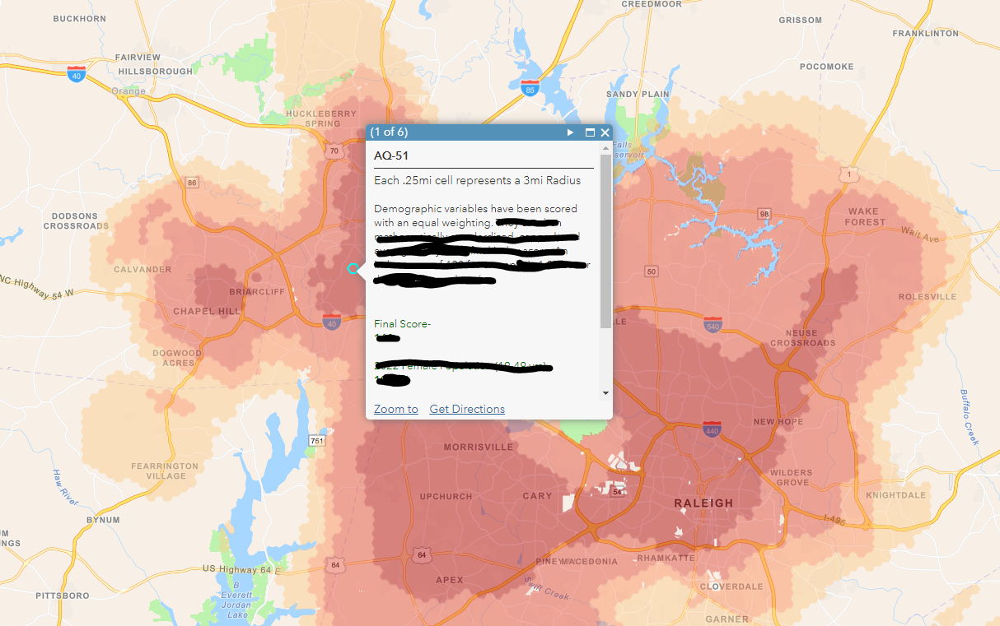
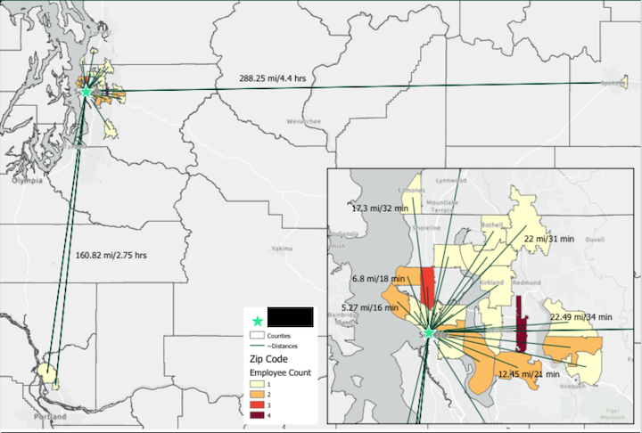

I have a lot of experience using Esri Dashboards to present, and summarize complex data into easy-to-understand findings. I am comfortable with organizing, and linking data to indicators, as well as creating complex queries. Most GIS dashboards that have done have involved commute relocation analyses, demographic retail site selection, portfolio management, and industrial site selection. (Specific example not available due to copyright).

I have used, researched, compiled, and analyzed demographic data in order to find suitable areas
for new business development. I have created multi-variable heatmaps by enriching tessalation cells with
demographic data, and calculating index scores. Those index scores were mainly created for retail and healthcare expansions.
I have also used Business Analyst Online to generate quick demographic reports, pull traffic counts, void analyses, and more as supplemental marketing materials. (Specific example not available due to copyright)

I have done plenty of commute analyses in order to determine opportunities for relocation, and/or consolidation.
I have primarily used ESRI's network analyst extension for this work using service areas, OD Cost Matrix, location allocation, and more. For public transit times, I have used the Google routes API to calculate average transit times. For multiple relocation options, results were presented through complex esri dashboards.
The same principles and tools were also utilized for industrial analyses such as network optimization, trucking times service areas calculated through Esri's streetmap dataset/license, and more. (Specific example not available due to copyright).